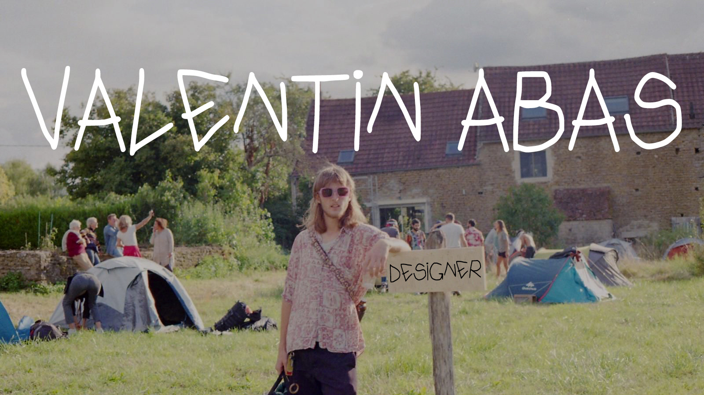
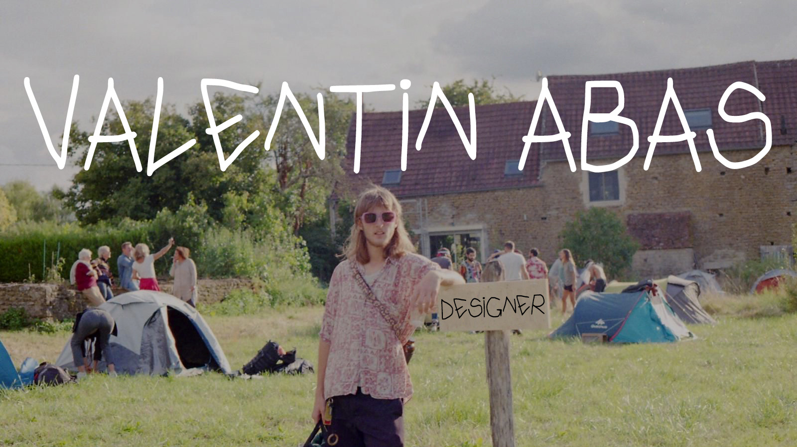

DODELE depuis le 01/01/2023
DODELE est un espace d’expression et une marque de vêtements où je
peux réaliser tout ce que j’imagine. J’essaie de faire toutes les typologies de
produits textiles. Cela va du housse pour bouteille, au sac en passant par le
jean, la veste, la chaise ou encore quelques objets déco.
STUDIO Jean Couvreur 06-12/2022
Stage
Assistant Designer en stage puis designer indépendant depuis 01/2023.
Wandschrappen 07-08/2021
Stage
Wandshrappen est un studio d’artiste et de designer basé à Rotterdam.
Ils travaillent principalement avec de la feutrine. C’est un tissu intéressant,
car il permet avec facilité de réaliser des formes 2D et 3D complexes. La
frontière entre l’art et le design était quasi inexistante, ce qui nous laissait
une grande liberté de création.
Atelier de Paris, Xavier Montey 05-06/2021
Stage
Xavier est un jeune designer, qui a commencé à travailler à son compte 2
ans avant mon stage. Il travaille beaucoup sur le vivant et les relations entre
les différents êtres vivants à travers ses projets.
ECOB 2020
Marque
ECOB est une de bouteille en verre recyclé que nous avons créé avec mon
frère. Nous voulions proposer une solution contre les bouteilles en plastique.
75 % de verre recyclé pour le flacon, tissu de Liège pour la housse de
protection, et un bouchon en aluminium. Nous concevons et produisons la
bouteille en Italie, la housse en Portugal et le bouchon en Belgique.
Le Coq Sportif 09-12/2017
Stage
Designer de la collection de chaussures printemps été 2019, sous la supervision
du directeur artistique en poste lors de mon stage.
 
